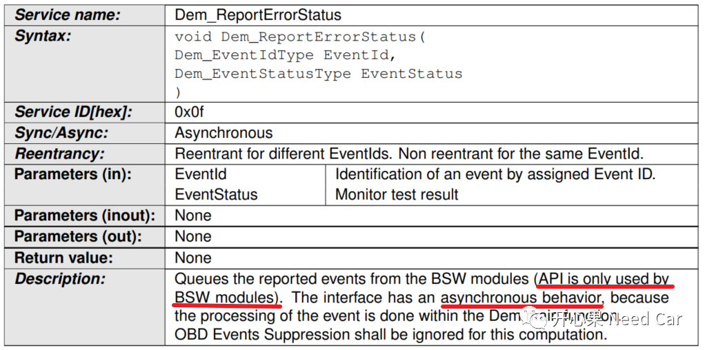
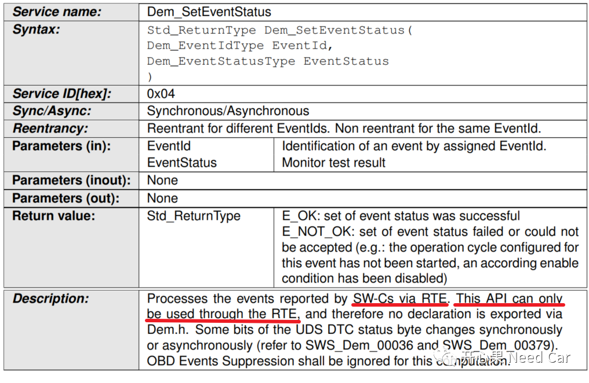
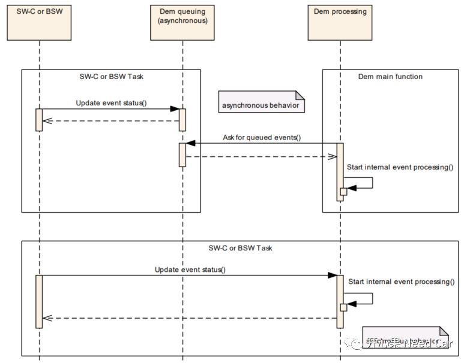
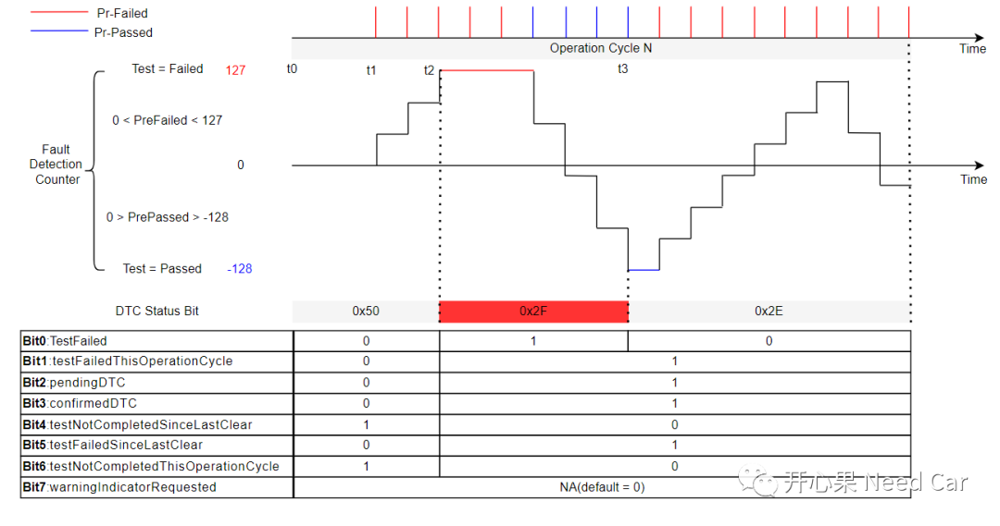
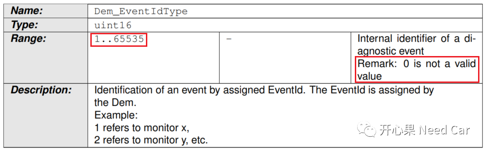
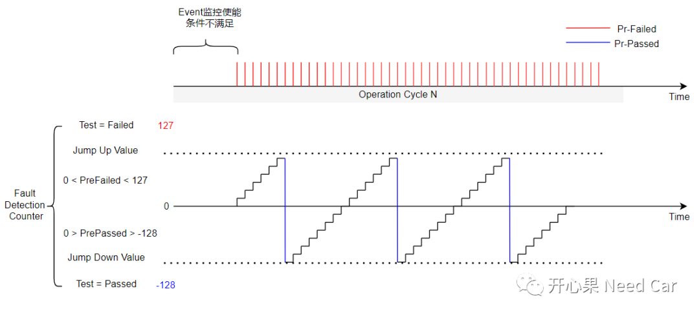

嵌入式开发中，对于数组越界的Bug，想必大家碰到过。数组越界可能各式各样，而本文，想和大家聊一个大家比较容易犯迷糊的数组越界Bug，该Bug导致了某个DTC不上报（已经满足DTC上报条件）。
开发中，为了防止DTC误报，对应的DTC会设置去抖策略。关于DTC故障上报的去抖策略，Jump Down/Jump Up等功能描述，可以参考前文Uds诊断：不同Operation Cycle下的DTC状态位变化。
当故障发生时，监控实体需要将对应事件的故障状态（DEM_EVENT_STATUS_PASSED、DEM_EVENT_STATUS_FAILED、DEM_EVENT_STATUS_PREPASSED、DEM_EVENT_STATUS_PREFAILED）上报给DEM（Diagnostic Event Manager）。上报的接口有两个：Dem_ReportErrorStatus()、Dem_SetEventStatus()。选用哪个接口更合适呢？我们先了解一下这两个接口的特点。（一）Dem_ReportErrorStatus()，函数原型如下所示：
- 该接口只能给BSW模块使用，如果故障上报由SWC发起，则该接口不适用（但是，并不是说就不能用，只是这样使用不符合Autosar的要求）；
- 该接口上报故障状态以后，故障状态信息不会立马更新，需要在DEM的main函数中更新，即：该接口是异步的；
- 该接口没有返回值，可以通过接口Dem_GetEventStatus()查询故障状态上报情况。
（二）Dem_SetEventStatus(),函数原型如下所示：

- 该接口需要通过RTE封装，给SWC使用，也就是说，如果故障状态由上层(SWC)上报，需要通过此接口；
- 该函数有返回值，可以通过返回值状态，同步获取故障状态是否上报成功；
同步：调用该接口，上报某个事件状态（passed
/ failed）时，会同步影响Bit 0 (TestFailed)、Bit 1 (TestFailedThisOperationCycle)、Bit 6( TestNotCompletedThisOperationCycle)这几个Bit状态。当然，也会同步影响Bit 4 (TestNotCompletedSinceLastClear)、Bit 5 (TestFailedSinceLastClear)；异步：调用该接口，上报某个事件状态（passed / failed）时，并不一定会同步影响Bit 2(PendingDTC)、Bit 3(ConfirmedDTC)、Bit 7 (WarningIndicatorRequested)，因为这些Bit位的状态改变取决于项目需求，比如：Bit3可能需要多个操作循环确认故障发生才能置位。事件状态更新，同步和异步的区别如下所示：

上层SWC对某个事件(Event)监控，该事件每发生一次故障，SWC上报一次DEM_EVENT_STATUS_PREFAILED状态（这里属于SWC去抖），使用的接口为Dem_ReportErrorStatus()(注意：违背了Autosar规范要求，但是，可以用，而故障状态不能同步更新)，当SWC上报的故障次数达到阈值时（eg:＞127），期待该事件的DTC故障出现（eg:故障状态0x2F），实际该故障却没有上报出来（eg:故障状态0x00）。

期待在t2时刻，该事件对应故障状态变为0x2F，但是，该事件的故障状态依然为0x00。
使用接口Dem_ReportErrorStatus()上报事件故障状态时，会传递两个参数，第一个是Event Id（uint16），第二个是事件的故障状态EventStatus。而本文的Bug点就出在第一个参数上。
问题代码中会传入一个Event Id = 0的参数，而Autosar规范要求该参数的有效范围是：1 . . 65535，0不能作为一个有效的EventId，如下所示：

此时，你可能会有这样一个疑问：“DET(DefaultErrorTracer)没有检测出来吗？”。对于这样的问题，使能DET以后，DET理应检测出来，并且在开发阶段就识别出来，问题更不应该流到整车测试阶段。实际排查代码发现，代码中确实打开了DET功能，但是该DET没有将问题反馈给开发人员，即：DET等同于虚设，没有实际功能。
注意：DET中如果检测到了开发问题，可以使用Trap，让开发人员更快的定位问题。当然，项目开发完成，经过严格测试以后，开发人员可以关掉DET功能（Autosar的DET模块本身就是为开发阶段，检测开发错误而设计的一个模块），节省资源消耗。
既然0值检测没用，代码就会继续执行，如何就数组越界了呢？故障是否报出，要看故障次是否达到阈值，eg：＞127。而每个DTC故障都有一个uint8的FDC(Fault Detection Counter)记录DTC的故障次数。也就是说：SWC只要上报事件的FDC＞127即可报出故障，为什么没有报出呢？排查代码发现：SWC确实在上报DEM_EVENT_STATUS_PREFAILED状态，但是当FDC到一定值以后（eg:80），会被Jump Down，使得故障一直报不出来，如下所示：
通过上图，可以看出，代码中有地方在报DEM_EVENT_STATUS_PREPASSED状态，通过排查发现：确实有一个地方在上报DEM_EVENT_STATUS_PREPASSED状态，而该状态实际不应该报(不满足条件)，只是因为开发人员在开发过程中没有对传入的参数（Event Id）进行检查，同时DET也没有检测出来。当传入Event Id = 0，上报状态为DEM_EVENT_STATUS_PREPASSED状态时，静态代码中，通过Event Id计算FDC，首先去判断其是否需要Jump Down。
正常功能中，FDC = FDCArr[ EventId - 1 ]，以此获取FDCArr数组中，DTC存储的FDC值，对于Uint16类型的EventId，0 - 1 = 0xFFFF，而FDCArr数组根据需求中要求的DTC个数设置其长度（eg:10），也就是FDCArr数组长度为10。由于Event Id = 0，实际却访问了FDCArr[0xFFFF]位置的值（越界），如果这个值（eg:100）＞Jump Down Value，则该DTC FDC获取的就是Jump Down Value值，即：FDC增加一段时间被下拉到Jump Down Value，这就是本文Bug的症结。为什么0-1=0xFFFF，可以参考前文C语言实用技巧：0x02 - 0xFE = ?。
方法一：优化DET功能，使其可以发现开发阶段的错误并反馈；
方法二：调用故障接口上报故障时，自检参数，比如：本文中的Event Id，进行0值检测。
AUTOSAR_SWS_DiagnosticEventManager.pdf
点击下方关注，一起聊聊Autosar/嵌入式，如果需要，联系作者进群，给你更专业的解答